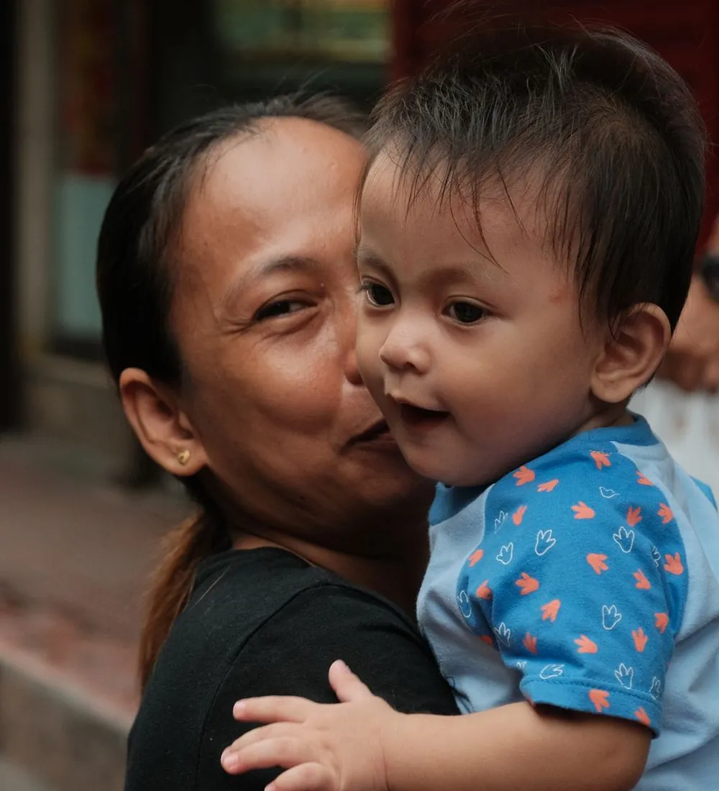

PARA KAY NANAY. PARA KAY BABY.
Care for you.
Care for baby.
Alagang E-Nay.
You're not alone, Nanay. Keep your checkup notes, vaccination dates and baby's growth records close—with help from your barangay health worker.

Kaagapay mo, Nanay.
A little help, every day.
01 For Nanay
02 For baby’s first two years
03 With your barangay health worker
ALAGA PARA SA BUONG PAMILYA
A familiar face.
A helping hand.
From your barangay health station to a visit at home, E-Nay helps you and your health worker keep track of the care your family receives.
FROM BUNTIS TO BABY’S FIRST STEPS
From expecting
to growing together.
Your family’s records, together.
Families and health workers share records for mothers and children, with contact details and barangay information.
Keep track of checkups and bakuna.
Keep checkup notes with each mother’s record, and measurements with each child’s record. Find vaccination dates in the same care history.
Stay connected to your health worker.
Families keep their care records together and request bakuna. Health workers verify vaccination requests, approve appointments and reserve a dose.
MAHINA ANG SIGNAL? MAY PARAAN.
Care shouldn't wait
for a stronger signal.
Sign in while you have internet. Wait for “Offline ready” and confirmation that a private copy is saved on your device before going offline.
- 1Save E-Nay on your phone.
Add E-Nay to your phone's home screen for quick access.
- 2Check records without a signal.
Unlock your saved offline copy. Families and health workers can keep pending changes until the clinic reconnects.
- 3Keep your records safe.
Health workers can download a backup. Before changing phones or clearing browser data, ask your health worker for help.
KASAMA MO SA PAG-AALAGA.
Magandang araw,
ka-barangay.
Sample only · fictional records
where you go.
A FEW THINGS TO KNOW
Simple by design.
Clear from the start.
For mothers, guardians, midwives and barangay health workers. Need help getting started? Ask at your barangay health station.
Who is E-Nay for?
Mothers and guardians manage their family records and request vaccinations. Health workers and midwives verify requests, approve appointments, record administered doses and manage vaccine inventory.
Can I really use it without internet?
Yes. Sign in online first and wait until the app and your private device copy are ready. You can then open those saved records offline. After signing out or your session expires, use your password to unlock the copy. A new device and external reading links still need internet.
Do my phone and computer share records?
Yes. Sign in online on each device to load the latest clinic records permitted for your account. Family and staff edits saved offline sync when connected. Conflicting edits to the same record need review, so one device cannot silently overwrite another.
Who can see my family’s records?
Your clinic’s health workers can see shared clinic records. Your patient account can see and edit only profiles you create and records linked to your family. Keep your password private, and sign out when using a shared phone or computer.
TARA, SIMULAN NATIN.